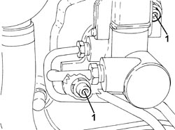
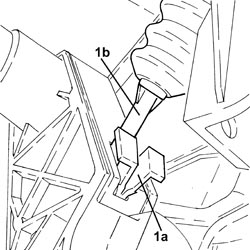
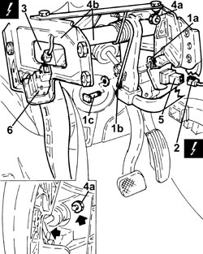
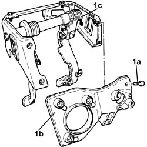
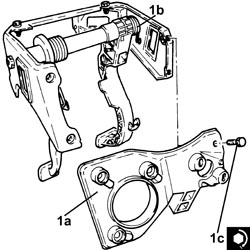
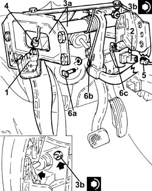
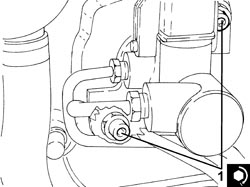

3330B02 PEDAL ASSEMBLY - R.R
- Path
- Procedures > 33 BRAKES > 3330 HYDRAULIC BRAKE SYSTEM > 3330B PEDAL UNIT > 3330B02 PEDAL ASSEMBLY - R.R
- Kind
- repair procedure (removal / refitting; the operation number is the code)
- Applies to
- engines: 1.8, 2.2, 1.9 JTD 8v, 1.9 JTD 16v; all production periods
- Interactive page
- https://sloeber94.github.io/elrnDB-fCrm/en/#/194000483
Applies to: engines: 1.8, 2.2, 1.9 JTD 8v, 1.9 JTD 16v; all production periods
 Removing
Removing
 Refitting
RefittingOp. 7040A65 CONSOLE SIDE CLOSING (ONE) - R.R.
(Both).
Op. 7040L28 TUNNEL SWITCH PANEL - R R
Op. 5520A10 IGNITION SWITCH ASSEMBLY - R+R
Op. 7040L20 TUNNEL COVER - R.R
Op. 5570T85 CD/AUDIO PLAYER LOADER - R R
Op. 7040A45 RIGHT DASHBOARD SIDE TRIM - R.R.
Op. 7040A31 DASHBOARD COMPARTMENT ASSEMBLY - R.R.
Op. 5010C55 RIGHT LOWER AIR DIFFUSER - R+R
Op. 7040A58 INSTRUMENT PANEL MOULDING - R+R
Op. 5580C22 AIR BAG MODULE - PASSENGER SIDE - R.R
Op. 5580P12 CONNECT PANEL REPLACE
Op. 7040A56 SWITCH UNIT IN DASHBOARD - R.R.
Op. 7040A85 R R HANDLE FOR FRONT SEAT FORE AND AFT ADJUSTMENT
Op. 5040D18 AIR CONDITIONING CONTROL UNIT - R.R.
Op. 7040A44 LEFT DASHBOARD SIDE TRIM - R.R.
Op. 7040A24 LOWER FACIA COVER TRIM - R+R
Op. 5010C57 LEFT LOWER AIR DIFFUSER - R R
Op. 7040A26 STEERING COLUMN TRIM - R+R
Op. 5580C23 DRIVE SIDE KNEE PROTECTION AIR BAG MODULE R. R.
Op. 7040A30 LEFT LOWER DASHBOARD TRIM - R.R.
Op. 5580C18 AIR BAG MODULE - R+R
Op. 5560B10 CONTROL PANEL - R+R
Op. 4110A10 STEERING WHEEL - R+R FOR REPLACEMENT OR CHECKS
Op. 5550A10 STALK UNIT ASSEMBLY - R+R
(for versions without ESP)
Op. 7040A60 UNDERDASHBOARD TRIM - R.R.
Op. 7040A82 SWITCH UNIT ON LEFT SIDE OF DASHBOARD - R.R.
Op. 5010D56 SOLAR SENSOR - R.R FOLLOWING ELECTRICAL SYSTEM CHECK
Op. 5010C12 WINDSCREEN DEMISTER DIFFUSER - R+R
Applies to: engines: 1.8, 2.2, 1.9 JTD 8v, 1.9 JTD 16v; all production periods
1. Undo the bolts fixing the brake servo to the pedal assembly.

Applies to: engines: 1.8, 2.2, 1.9 JTD 8v, 1.9 JTD 16v; all production periods
1. Undo the clip (1a) and release master cylinder pushrod (1b) from the clutch pedal.

Applies to: engines: 1.8, 2.2, 1.9 JTD 8v, 1.9 JTD 16v; all production periods
1. Remove the retaining clip (1a), release the return spring (1b) and extract the pin (1c) connecting the brake servo to the brake pedal.
2. Disconnect the electrical connection from the brake pedal switch.
Description | Connector | |
|---|---|---|
2 | Brake pedal switch |
3. Disconnect the electrical connection from the clutch pedal switch.
Description | Connector | |
|---|---|---|
3 | Clutch pedal switch |
4. Undo the nuts (4a) and remove the pedal assembly (4b).
5. Remove the brake pedal switch from the pedal assembly.
6. Remove the clutch pedal switch from the pedal assembly.

Applies to: engines: 1.8, 2.2, 1.9 JTD 8v, 1.9 JTD 16v; all production periods
1. Undo the bolts (1a) and separate the support (1b) from the pedal assembly (1c).

Applies to: engines: 1.8, 2.2, 1.9 JTD 8v, 1.9 JTD 16v; all production periods
Applies to: engines: 1.8, 2.2, 1.9 JTD 8v, 1.9 JTD 16v; all production periods
Refitting
Removing1. Assemble the support (1a) and the pedal assembly (1b) and tighten the bolts (1c) to the recommended torque.
Component | Fastening | dia | Value (daNm) | Validity |
|---|---|---|---|---|
Pedal assembly | Bolt | M8 | (support side) 1.8 - 2.2 |

Applies to: engines: 1.8, 2.2, 1.9 JTD 8v, 1.9 JTD 16v; all production periods
1. Place the clutch pedal switch in its housing in the pedal assembly.
2. Place the brake pedal switch in its housing in the pedal assembly.
3. Position the pedal assembly (3a) in its housing and secure it by tightening the nuts (3b) to the recommended torque.
Component | Fastening | dia | Value (daNm) | Validity |
|---|---|---|---|---|
Pedals mounting | Nuts | M8 | (bodyshell side) 1.6 - 2.4 |
4. Connect the electrical connection to the clutch pedal switch.
5. Connect the electrical connection to the brake pedal switch.
6. Place the pin (6a) connecting the brake servo to the brake pedal, connect the return spring (6b) and fit the retaining clip (6c).

Applies to: engines: 1.8, 2.2, 1.9 JTD 8v, 1.9 JTD 16v; all production periods
- Connect the master cylinder pushrod to the clutch pedal and secure with a clip.
1. Tighten the bolts fixing the brake servo to the pedal assembly to the recommended torque.
Component | Fastening | dia | Value (daNm) | Validity |
|---|---|---|---|---|
Brake servo | Bolt | M8 | (pedals side) 1.8 - 2.2 |

Applies to: engines: 1.8, 2.2, 1.9 JTD 8v, 1.9 JTD 16v; all production periods
Op. 5010C30 CENTRAL AIR VENT IN DASHBOARD - R.R.
Op. 5010C14 TOP OUTLET (ONE) ON FASCIA - R+R
Op. 5010C12 WINDSCREEN DEMISTER DIFFUSER - R+R
Op. 5010D56 SOLAR SENSOR - R.R FOLLOWING ELECTRICAL SYSTEM CHECK
Op. 7040A82 SWITCH UNIT ON LEFT SIDE OF DASHBOARD - R.R.
Op. 7040A60 UNDERDASHBOARD TRIM - R.R.
Op. 5550A10 STALK UNIT ASSEMBLY - R+R
(for versions without ESP)
Op. 4110A10 STEERING WHEEL - R+R FOR REPLACEMENT OR CHECKS
Op. 5560B10 CONTROL PANEL - R+R
Op. 5580C18 AIR BAG MODULE - R+R
Op. 7040A30 LEFT LOWER DASHBOARD TRIM - R.R.
Op. 5580C23 DRIVE SIDE KNEE PROTECTION AIR BAG MODULE R. R.
Op. 7040A26 STEERING COLUMN TRIM - R+R
Op. 5010C57 LEFT LOWER AIR DIFFUSER - R R
Op. 7040A24 LOWER FACIA COVER TRIM - R+R
Op. 7040A44 LEFT DASHBOARD SIDE TRIM - R.R.
Op. 5040D18 AIR CONDITIONING CONTROL UNIT - R.R.
Op. 7040A85 R R HANDLE FOR FRONT SEAT FORE AND AFT ADJUSTMENT
Op. 7040A56 SWITCH UNIT IN DASHBOARD - R.R.
Op. 5580P12 CONNECT PANEL REPLACE
Op. 5580C22 AIR BAG MODULE - PASSENGER SIDE - R.R
Op. 7040A58 INSTRUMENT PANEL MOULDING - R+R
Op. 5010C55 RIGHT LOWER AIR DIFFUSER - R+R
Op. 7040A31 DASHBOARD COMPARTMENT ASSEMBLY - R.R.
Op. 7040A45 RIGHT DASHBOARD SIDE TRIM - R.R.
Op. 5570T85 CD/AUDIO PLAYER LOADER - R R
Op. 7040L20 TUNNEL COVER - R.R
Op. 5520A10 IGNITION SWITCH ASSEMBLY - R+R
Op. 7040L28 TUNNEL SWITCH PANEL - R R
Op. 7040A65 CONSOLE SIDE CLOSING (ONE) - R.R.
(Both).
Topics linked from this page (32)
- 4110A10 STEERING WHEEL - R+R FOR REPLACEMENT OR CHECKS
- 5010C12 WINDSCREEN DEMISTER DIFFUSER - R+R
- 5010C14 TOP OUTLET (ONE) ON FASCIA - R+R
- 5010C30 CENTRAL AIR VENT IN DASHBOARD - R.R.
- 5010C55 RIGHT LOWER AIR DIFFUSER - R+R
- 5010C57 LEFT LOWER AIR DIFFUSER - R R
- 5010D56 SOLAR SENSOR - R.R FOLLOWING ELECTRICAL SYSTEM CHECK
- 5040D18 AIR CONDITIONING CONTROL UNIT - R.R.
- 5520A10 IGNITION SWITCH ASSEMBLY - R+R
- 5550A10 STALK UNIT ASSEMBLY - R+R
- 5560B10 CONTROL PANEL - R+R
- 5570T85 CD/AUDIO PLAYER LOADER - R R
- 5580C18 AIR BAG MODULE - R+R
- 5580C22 AIR BAG MODULE - PASSENGER SIDE - R.R
- 5580C23 DRIVE SIDE KNEE PROTECTION AIR BAG MODULE R. R.
- 5580P12 CONNECT PANEL REPLACE
- 7040A24 LOWER FACIA COVER TRIM - R+R
- 7040A26 STEERING COLUMN TRIM - R+R
- 7040A30 LEFT LOWER DASHBOARD TRIM - R.R.
- 7040A31 DASHBOARD COMPARTMENT ASSEMBLY - R.R.
- 7040A44 LEFT DASHBOARD SIDE TRIM - R.R.
- 7040A45 RIGHT DASHBOARD SIDE TRIM - R.R.
- 7040A56 SWITCH UNIT IN DASHBOARD - R.R.
- 7040A58 INSTRUMENT PANEL MOULDING - R+R
- 7040A60 UNDERDASHBOARD TRIM - R.R.
- 7040A65 CONSOLE SIDE CLOSING (ONE) - R.R.
- 7040A82 SWITCH UNIT ON LEFT SIDE OF DASHBOARD - R.R.
- 7040A85 R R HANDLE FOR FRONT SEAT FORE AND AFT ADJUSTMENT
- 7040L20 TUNNEL COVER - R.R
- 7040L28 TUNNEL SWITCH PANEL - R R
- I030 BRAKE PEDAL SWITCH
- I031 CLUTCH PEDAL SWITCH